Como la LMS100 cuenta con dos compresores en serie sin acople mecánico, las variaciones en las
condiciones del ciclo —gestionadas por el sistema de control— pueden provocar stall en el
compresor de alta presión (HPC).
El stall se produce cuando la capa límite —la porción de fluido más próxima al álabe— se separa
de la superficie debido a un gradiente de presión adverso en la cara superior, interfiriendo con
el flujo normal del aire.
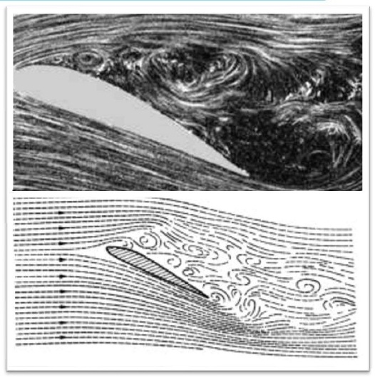
En la LMS100, el stall puede generarse cuando existe un desbalance entre compresores, es decir, cuando el LPC suministra un caudal de aire superior al que el HPC puede admitir. Esta condición provoca inestabilidad aerodinámica y, de evolucionar, puede causar esfuerzos elevados y vibraciones excesivas, con riesgo de daño severo en la unidad..
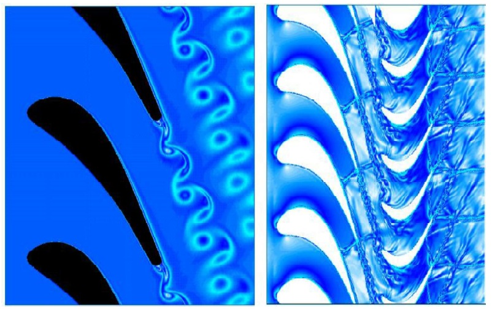
Con el fin de prevenir el stall en el HPC, en la LMS100 se define una curva de operación del booster (Booster Operating Line), que establece la relación entre la presión de compresión y la velocidad N44. Mantener la operación dentro de esta curva garantiza que el caudal suministrado por el LPC sea compatible con la capacidad del HPC.
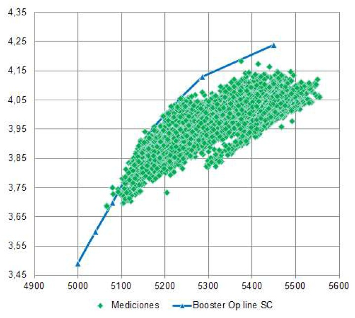
Este módulo ha sido modificado respecto a su especificación.
Se debe tener precaución al actualizar este módulo.
El bloque B_RTLAG1TC ha sido reemplazado por la macro RTLAG1TC_MAC,
que permite constantes de tiempo Tau inferiores a la velocidad de fotogramas.
22/11/2010 MED - Se corrigió el módulo para que la salida "OUT" esté conectada a la entrada
del bloque B_DIV y la salida "P" a PS3ST_PV1. Anteriormente, las conexiones estaban invertidas.
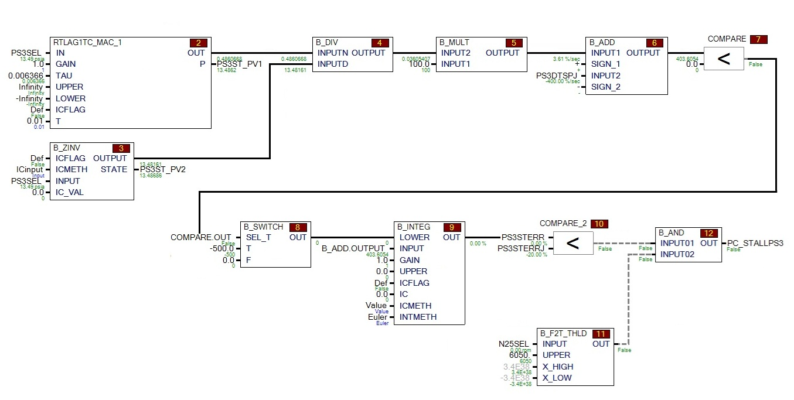
Detección Stall PS3
PS3 Inicial = 100
Factor F = 1.00
PS3 Previo = 120
N25 = 6000
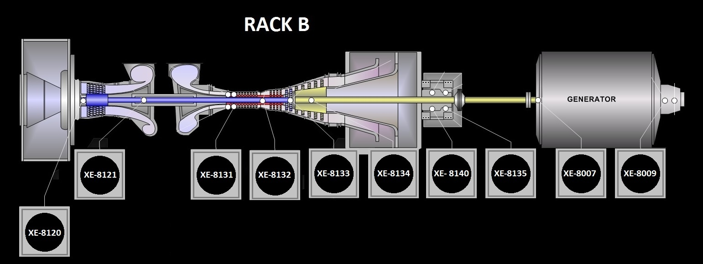
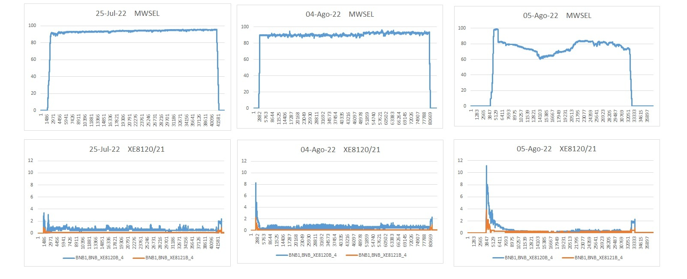
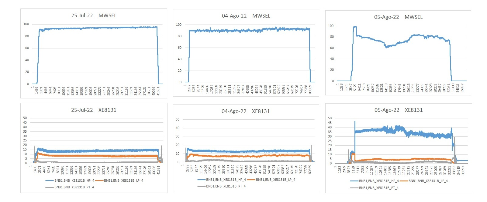
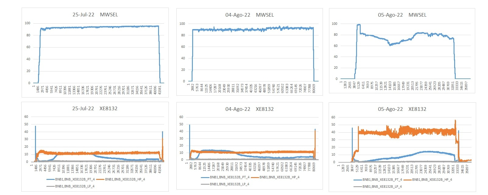
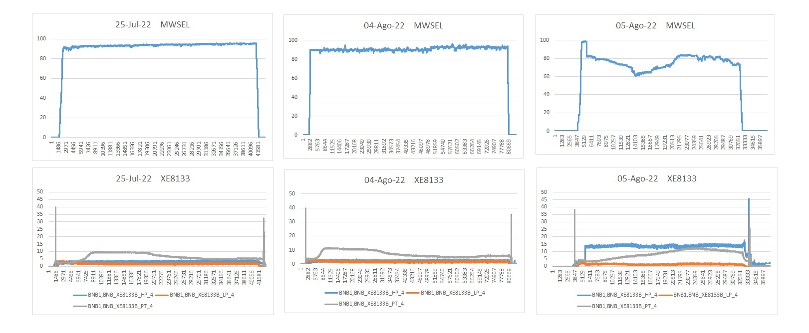
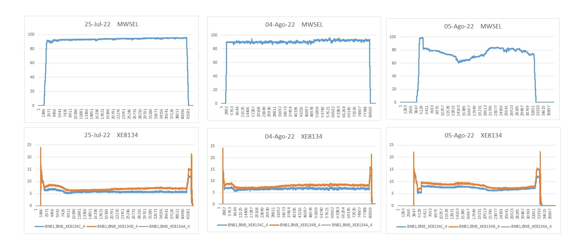
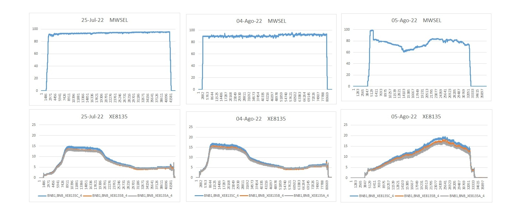